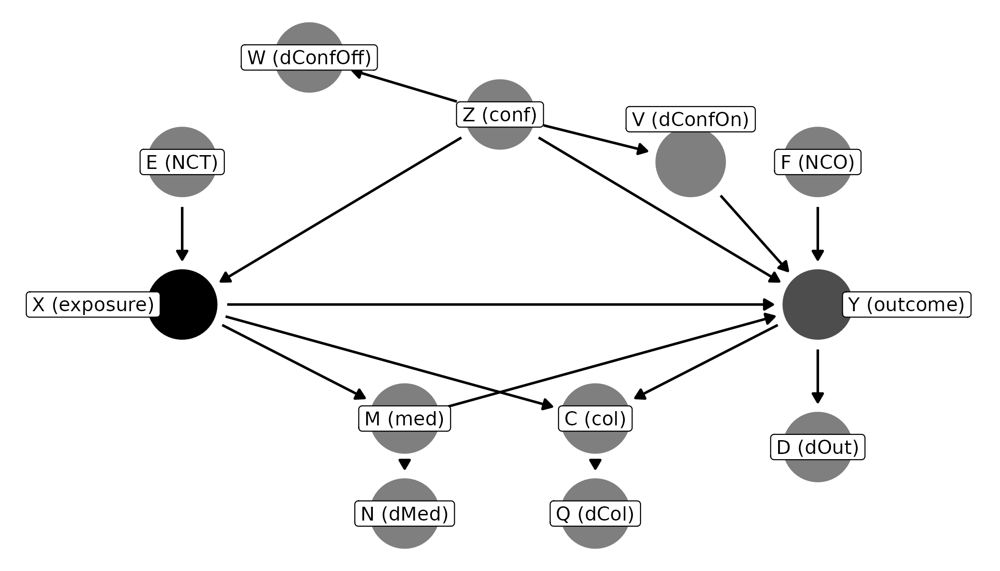

Whether a control variable belongs in a regression depends on its
relationships with other variables. DAGassist labels each
variable with a causal role, then builds the adjustment sets those roles
imply. This article explains every role, which ones to adjust for, and
how DAGassist builds the minimal and canonical adjustment
sets. Our causal role classification framework follows Cinelli et al. (2022)’s taxonomy of good,
bad, and neutral controls.
A DAG with every role
To see every role at once, we write a small DAG in
dagitty syntax. Each letter stands for one role:
X is the exposure and Y the outcome.
roles_dag <- dagitty::dagitty("dag {
X [exposure]
Y [outcome]
X -> Y
Z -> X
Z -> Y
Z -> V -> Y
Z -> W
X -> M -> Y
M -> N
X -> C <- Y
C -> Q
Y -> D
E -> X
F -> Y
}")
Reading the roles table
Roles depend only on the DAG, so this step needs no data:
DAGassist(roles_dag, show = "roles", verbose = FALSE)
#> DAGassist Report:
#>
#> Roles:
#> variable role Exp. Out. conf med col dOut dMed dCol dConfOn dConfOff NCT NCO
#> X exposure x
#> Y outcome x
#> Z confounder x
#> M mediator x
#> C collider x x x
#> W Dconf_off x
#> D dOut x x
#> E nct x
#> F nco x
#> N Dmediator x
#> Q dOut x x x
#> V nco x x
#>
#> Legend hidden because verbose = FALSE. Re-run with verbose = TRUE to see role definitions.Each column is a role, and an x marks the roles a
variable plays. The table below defines each role and the causal
inference implications of adjusting for each when the target is the
total effect of X on Y. Note that a variable
can play more than one role, but the role column reports
the most identification-relevant one. For example, if a variable were a
descendant of a mediator and also a neutral control on the outcome, its
primary role would be mediator because mediators shift estimands and
neutral controls do not.
| Column | Role | Example | What it is | Adjust for it? |
|---|---|---|---|---|
conf |
Confounder | Z |
A common cause of X and
Y
|
Yes. It opens a back-door path
(X <- Z -> Y) that must be blocked. |
dConfOn |
Descendant of a confounder, on a back-door path | V |
Caused by a confounder, and causes Y
|
Safe. It blocks the part of the back-door path that runs through it. |
NCO |
Neutral control on the outcome | F |
Causes Y but not X
|
Safe, and usually improves precision. |
NCT |
Neutral control on the treatment | E |
Causes X but not Y
|
Safe for bias, but usually widens standard errors. |
dConfOff |
Descendant of a confounder, off the back-door path | W |
Caused by a confounder, but doesn’t affect
Y
|
Irrelevant. It neither removes nor adds bias. |
med |
Mediator | M |
On a causal path, X -> M -> Y
|
No. It removes part of the effect, turning the total effect into a direct effect. |
dMed |
Descendant of a mediator | N |
Caused by a mediator | No. It partly controls for the mediator. |
col |
Collider | C |
Caused by both X and Y
|
No. It opens a non-causal path between
X and Y. |
dCol |
Descendant of a collider | Q |
Caused by a collider | No. It partly opens the same path. |
dOut |
Descendant of the outcome | D |
Caused by Y
|
No. It biases the estimate. |
Minimal and canonical adjustment sets
An adjustment set is a set of controls that blocks every back-door
path from X to Y without including anything
X affects. DAGassist finds these sets with
dagitty (Textor et al. 2016) and fits one
model for each:
- A minimal set contains no redundant variables:
remove any one, and some back-door path reopens. A DAG can have several
minimal sets, and
DAGassistfits a model for each (“Minimal 1”, “Minimal 2”, and so on). - The canonical set contains every variable that
causes
XorY, except those the exposure affects (Zander et al. 2014). It is unique, and it is a valid adjustment set whenever any valid set exists.
For roles_dag:
dagitty::adjustmentSets(roles_dag, type = "minimal")
#> { Z }
dagitty::adjustmentSets(roles_dag, type = "canonical")
#> { E, F, V, Z }The minimal set is just the confounder. The canonical set adds
V and the two neutral controls, and leaves out everything
marked “do not adjust” as well as the irrelevant W.
| Role | Example | Minimal | Canonical |
|---|---|---|---|
| Confounder | Z |
✓ | ✓ |
| Descendant of a confounder, on a back-door path | V |
* | ✓ |
| Neutral control on the outcome | F |
✓ | |
| Neutral control on the treatment | E |
✓ | |
| Descendant of a confounder, off the back-door path | W |
||
| Mediator, descendant of a mediator |
M, N
|
✗ | ✗ |
| Collider, descendant of a collider |
C, Q
|
✗ | ✗ |
| Descendant of the outcome | D |
✗ | ✗ |
✓ = included. Blank = left out, but harmless to add. ✗ = left out because adjusting for it biases the total effect.
* V could replace Z in a minimal set only
if every back-door path through Z also ran through
V. In roles_dag, Z also affects
Y directly, so it can’t.
Why the two sets can give different answers
Both sets remove confounding, so both should recover the same effect.
They differ in precision. The turnout example on the homepage shows this: its canonical set adds a
neutral control on the outcome (elect_comp) and a neutral
control on the treatment (industry) to the minimal set
{age, parental_ses}.
DAGassist(turnout_dag,
lm(turnout ~ income + parental_ses + age + polint + industry + elect_comp,
data = turnout_data),
show = "models", type = "text", verbose = FALSE)| Term | Original | Minimal 1 | Canonical |
|---|---|---|---|
| income | 0.281*** | 0.493*** | 0.492*** |
| (0.016) | (0.016) | (0.015) | |
| parental_ses | 0.331*** | 0.324*** | 0.332*** |
| (0.017) | (0.019) | (0.018) | |
| age | 0.275*** | 0.273*** | 0.267*** |
| (0.017) | (0.020) | (0.019) | |
| polint | 0.420*** | ||
| (0.014) | |||
| industry | -0.017 | -0.010 | |
| (0.015) | (0.016) | ||
| elect_comp | 0.500*** | 0.506*** | |
| (0.014) | (0.015) | ||
| Num.Obs. | 5000 | 5000 | 5000 |
| R2 | 0.596 | 0.423 | 0.525 |
- p-value legend: + < 0.1, * < 0.05, ** < 0.01, *** < 0.001.
- Controls (minimal): {age, parental_ses}.
- Controls (canonical): {age, elect_comp, industry, parental_ses}.
The minimal and canonical estimates agree (0.49), and both differ
sharply from the original model, which controls for the mediator
polint. Here the canonical standard error is slightly
smaller (0.015 vs. 0.016). If the DAG is right, the minimal and
canonical estimates should differ only by sampling noise, so a large gap
between them suggests the DAG is wrong somewhere. The robustness article shows how to probe
that.